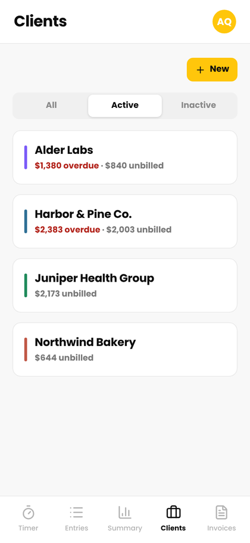
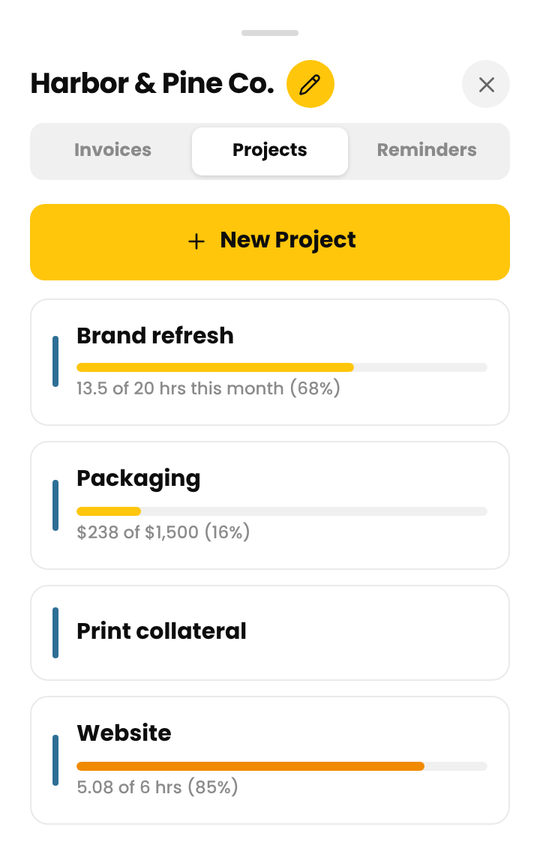
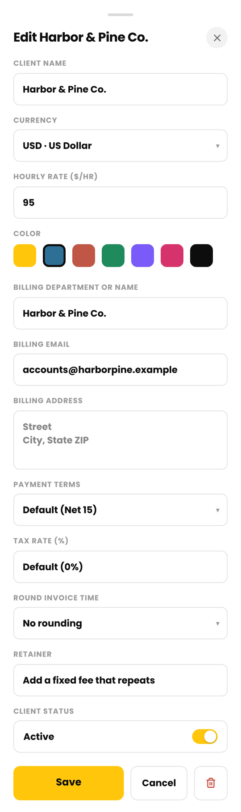
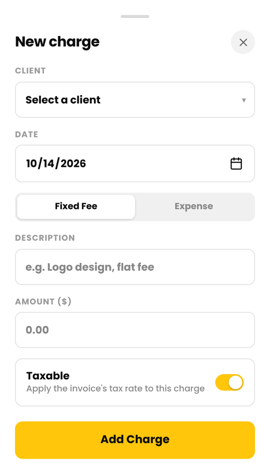
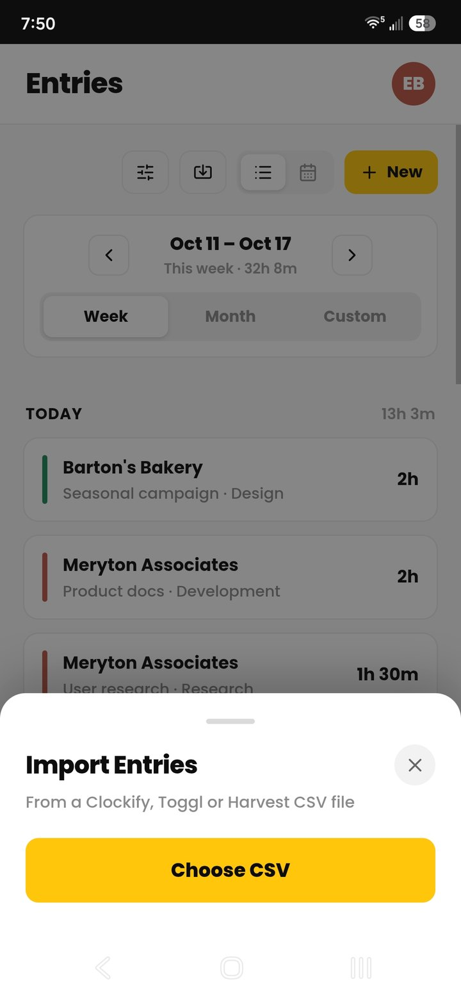
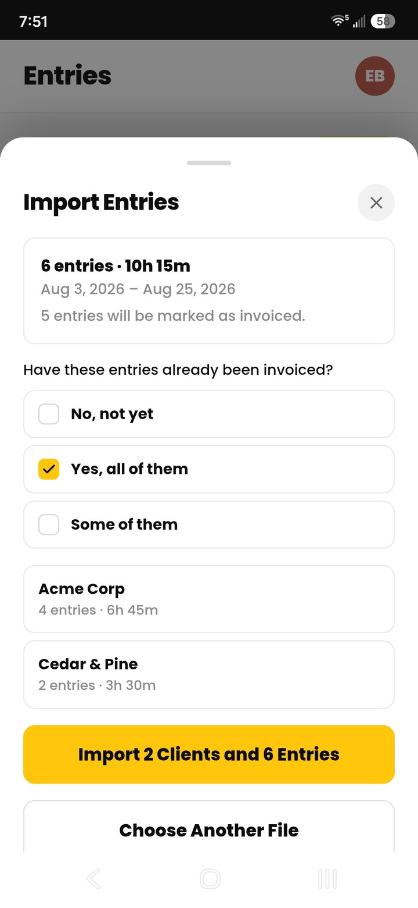
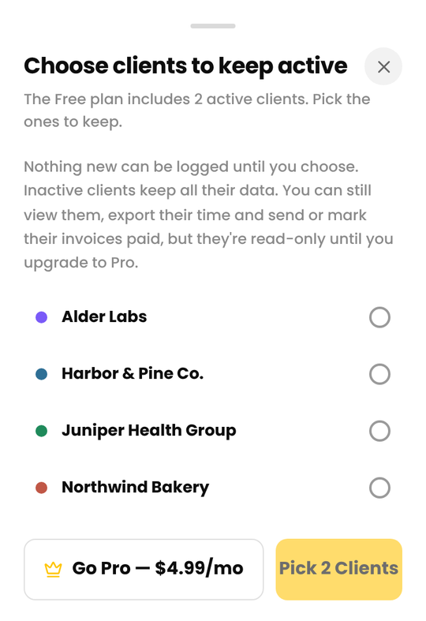

Cruxy / Support / Clients and projects
Clients and projects
Clients and projects organize your time and decide what you charge.
Updated
Add a client
- Tap Clients, then New.
- Enter the client's name and a first project.
- Choose a currency and your hourly rate. A rate of 0 makes the client non-billable, so no invoices can be made for them.
- Pick a color and tap Add Client.
Free includes 2 active clients. Make one inactive when you're finished with it, or go Pro for unlimited.

Edit a client's details
Tap a client, then the yellow pencil next to the name. You can change:
- Name, currency, hourly rate and color
- Billing name, email and address. These appear on the invoice, and the email is where invoices are sent.
- Payment terms for this client. Default follows the terms in Settings.
- A tax rate for this client, if different from your default
- How invoice time is rounded for this client
- A retainer, and whether the client is active
Changing the hourly rate affects future entries only. Past entries keep the rate they were logged at.
You can't change a client's currency while it has unbilled time or charges. Invoice them or remove them first. Changing the currency doesn't convert the rate, so update it too.
Add and edit projects
Tap a client, then the Projects tab.
- Tap New Project to create one.
- Tap a project to rename it, give it its own hourly rate, set a budget or make it inactive.
- A project with no entries can be deleted. Once it has time, make it inactive instead.
- Inactive projects don't appear when you log time, and they're read-only. Their old entries stay.
A project rate replaces the client's rate for that project. Leave it blank to use the client's rate. A project can't make a non-billable client billable.

Make a client inactive or reactivate one
When the work is done, make the client inactive. Tap the client, tap the yellow pencil, switch Client Status off and tap Save.
- Inactive clients are hidden from the timer and pickers and become read-only.
- Their time, projects and invoices stay. You can still invoice unbilled time and mark invoices paid.
- Inactive clients don't count toward your 2 active clients on Free.
On the Clients tab, the All / Active / Inactive switch at the top controls which clients you see. To reactivate one, open it from Inactive and switch Client Status back on. On Free you need a free slot first, so make another client inactive or go Pro.

Delete a client
Open the client's details and tap the trash icon. Deleting a client permanently deletes its projects and all of its time entries. It can't be undone. If you might need the history, make the client inactive instead.
Add a fixed fee or expense
Use a charge for something that isn't hourly, like a flat fee or a purchase you're passing on.
- Tap Entries, then New, then Charge.
- Choose the client and date, and whether it's a Fixed Fee or an Expense.
- Add a description and amount. Turn Taxable off if your invoice tax shouldn't apply to it.
- Tap Add Charge.
Unbilled charges appear on your next invoice for that client. A charge that's already on an invoice can't be edited. Delete the invoice first. The client needs an hourly rate above 0 to get charges.

Import from Clockify, Toggl or Harvest
Switching from another tracker? Import your time from its CSV export. Import is free on every plan.
- Export your time entries as a CSV from Clockify, Toggl or Harvest.
- In Cruxy, tap Entries, then the import icon (the tray with an arrow) in the top row.
- Tap Choose CSV and pick the file.
- Review the summary: the entries, the date range, and which clients are new or existing.
- Tap Import.
Every row needs a date, a duration and a client. Rows with no project go into a project called General. Entries already in Cruxy are skipped, so importing the same file twice is safe. The file can be up to 10 MB.
If any rows can't be read, nothing is imported. Tap Copy error list to see what to fix, then try again.
If the file has time you've already invoiced, Cruxy asks Have these entries already been invoiced? Choose Yes, all of them or Some of them so they don't show up as unbilled.
On Free, new clients beyond your 2 active clients are imported as inactive. You can choose which to keep active, or go Pro.
Right after an import, tap Undo Import if you need to take it back. Once you close that screen, the option is gone.


If Cruxy asks you to choose clients
If a Free workspace has more than 2 active clients, for example after Pro ends, Cruxy asks you to pick the 2 to keep active. The others are made inactive with their data kept. You can't log new time until you choose. Inactive clients are read-only, but you can still view and export their time and send or mark their invoices paid. Going Pro again lifts the limit.
